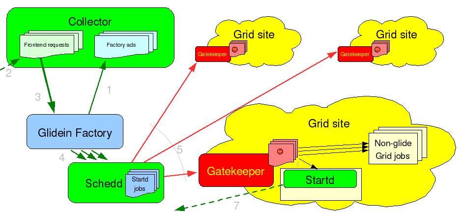
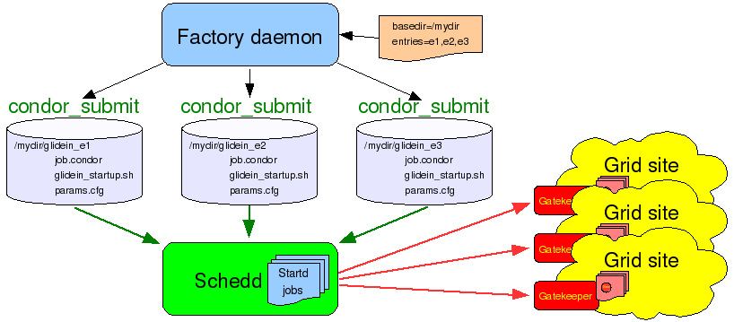
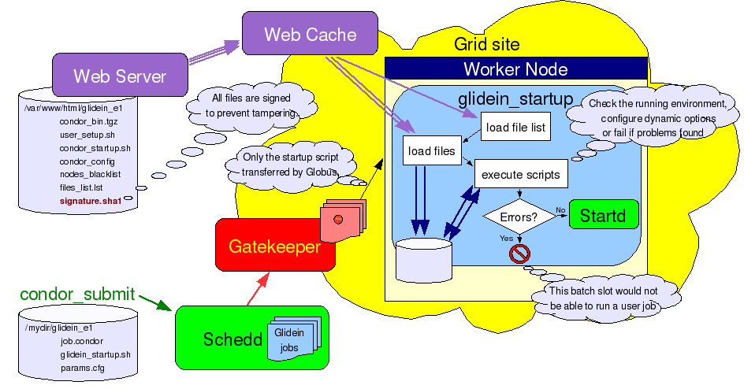

A Glidein Factory is the glidein producing infrastructure of a glidein based WMS.
The main task of the Glidein
Factory is to advertise itself, listen for requests from frontend
clients and submit glideins.
Look at the picture below for a schematic view.

A
single glidein factory can handle multiple kinds of glideins, also
called glidein entry points (as they usually point to
different Grid resources). For each entry point, it will advertise a
different class-ad.
Similarly, each request from a frontend
client will affect a single entry point; a frontend will need to
advertise several requests in order to have glideins submitted to all
the desirable resources.
The main idea behind a Glidein Factory is to make the life of a VO
frontend as easy as possible. And to do that, the factory needs to
abstract as much as possible.
For starters, the factory
itself is the one that knows the details of various Grid sites and
properly configures the glidein entry points, so they will run
without any additional knowledge. A frontend only needs to know that
an entry point exists, and the parameters it takes.
Additionally,
the factory also does the submissions themselves. The frontend just
publishes that it needs some glideins and the factory will
start submitting them. The only handle the frontend may want to use
is the ability to regulate the rate of glideins that are sent to the
Grid site. In the current implementation, this can be achieved by
setting the desired number of idle
glideins to be kept in the Grid queue.
The typical
scenario features a frontend with several (hundreds or even
thousands of) user jobs in the queue that is looking for resources to
run them. It will fetch the factory classads, select the ones that
satisfy its needs, and advertise class-ads with requests for those
glideins. If the frontend ever runs out of user jobs, it will
advertise the fact that it does not need those glideins anymore. In
practical terms, this means asking the factory to keep exactly 0 idle
glideins in the queue.
The Glidein Factory is composed of several entry points. The Factory Daemon is really just a small process tasked to start and monitor the Factory Entry Daemons. See picture in the next section for a logical overview.
All daemons of a Glidein Factory share the same directory tree. The root of the tree contains the main configuration files used by the Factory daemon.
More details about the Glidein Factory Daemon internals can be found here.
The Glidein Factory is composed of several Factory Entry Daemons,
each advertising itself and processing the incoming requests. See the
picture below for a logical overview.

All
daemons of a Glidein Factory share the same directory tree. The root
of the tree contains the common startup and configuration files,
while each entry point has a few additional configuration files on
its own. Each entry point is completely described by these files on
disk; the Factory Entry Daemons only extract information about entry
point attributes and supported parameters needed for advertising.
When glidein jobs are submitted, only the frontend provided
parameters need to be given to the glidein startup script, as the
script itself will autonomously gather all the other
information.
More details about the Factory Entry Daemon
internals can be found here.
As said in the overview,
a glidein is essentially a properly configured Condor startd.
However, somebody needs to do that configuration. So we need a job
startup script that will do the work.
A startup script needs
to perform several tasks:
start Condor
Given the complexity of the task, and for the sake of flexibility,
it makes sense to split the script in several pieces. So the glidein
job is composed of several pieces, including the startup script
pieces, the Condor binaries, and a base configuration file.
However, having a Grid job with data files can represent a
challenge; each Grid flavor treats data in a different way!
To
make the system as general as possible, the Glidein Factory
requires the use of a Web Server to distribute its data. This version
of the Glide based Factory was tested with Apache
and TUX,
but any other web server should work just well, as only static file
delivery is required.
A general overview of how a glidein
starts up is given in the picture below.

The
task of the basic startup script (called glidein_startup.sh)
is thus reduced to loading the other files, including the support
scripts, the base config files and the Condor binaries. The list of
files to load is obtained from the Web server as one of the first
steps, making the startup script completely generic.
Please
notice two things. First, all the files transfered over the Web are
signed using sha1sum. This
prevents a hacker from tampering with the files while in transit.
This is especially important for executables and scripts (to prevent
arbitrary code to be executed), but is useful for configuration files
too.
The signature checking is implemented in two steps:
The startup script loads the signature file from the Web server and verifies its signature. All other downloads, including the file containing the list of other files, is checked against the values in the signature file. See the pseudo-code below.
wget http://head.fnal.gov/glidein_g1/signature.sha1 sha1sum known_sha1 signature.sha1 if $?!=0 then exit 1 fi grep files_list signature.sha1 > filelist.sha1 wget http://head.fnal.gov/glidein_g1/files_list.lst sha1sum -c filelist.sha1 if $?!=0 then exit 2 fi for file in files_list.lst do wget http://head.fnal.gov/glidein_g1/$file done sha1sum -c signature.sha1 if $?!=0 then exit 3 fi launch scripts
The second point I would like to stress are the advantages that
come from using standard Web technologies. Web technologies are
widely used nowadays and there is a plethora of tools that can be
readily used. In our case, we can reduce the network load and speed
startup times by using a Web cache near the worker nodes, if
available. The Glidein Factory was tested with Squid,
but other products should work as well. It is also worth mentioning
that both OSG and gLite has expressed interest in deploying a Squid
server on every Grid site.
More details about the startup
script internals and support scripts provided by the current
implementation can be found here.
To run a Glidein Factory, you need to perform two steps:
To create an entry point you need:
the loction of the Web server data directory.
Another option is to use the provided
installer.
Technical details of the
configuration are described on a dedicated page .
The glidein factory comes with a init.d style startup script.
Glidein factory starting and stopping is handled by
<glidein directory>/factory_startup start|stop|restart
You can check that the factory is actually running with
<glidein directory>/factory_startup status
See the monitoring section on how to check other info.
The reason why manual changes are so problematic are two fold:
The second problem is caching. For performance reasons, most Web caches don't check too often if the original document has been changed; a glidein could thus get an old copy of a file and fail the signature check.
There is only one file that is neither signed nor cached and can be thus modified; the blacklisting file called nodes.blacklist. This one can be used to temporarily blacklist malfunctioning nodes that would pass regular sanity checks (for example: memory corruption or I/O errors), while waiting for the Grid site admin to take action.
The proper procedure to update an entry point is
to make a copy of the official configuration file (i.e. glideinWMS.xml)
and run
<glidein directory>/factory_startup reconfig config_copy_fname
This will update the directory tree and restart the factory and entry dameons.
Please notice that if you make any errors in the new configuration file, the reconfig script will throw an error and do nothing. So you should never need to worry about corrupting the installation tree using this tool.
Starting with v1_3, the glidein factory supports the dynamic
handling of downtimes.
Downtimes can be handled both at the
factory and at the entry level.
Downtimes are useful when one or more Grid sites are known to have
issues (can be anything from scheduled maintenance to a storage
element corrupting user files).
In this case the factory
administrator can temporarily stop submitting glideins to the
affected sites, without stopping the factory as a whole.
<glidein directory>/factory_startup up|down|infosysdown|statusdown 'factory'|'entries'|entry_name
. An admin can handle and monitor downtimes both at the entry and at
the factory level.
Please be aware that both will be used.
Advanced users may want ot have a look at
./glideinWMS/factory/manageFactoryDowntimes.py
command.
In case of problems, you may want to test a glidein by hand.
Move to the glidein directory and run
./local_start.sh entry_name fast -- GLIDEIN_Collector yourhost.dot,your.dot,domain
. This will start a glidein on the local machine and pointing to the yourhost.your.domain collector.
Please make sure you have a valid Grid environment set up, including a valid proxy, as the glidein needs it in order to work.
Upgrading a factory configuration tree to a new version of glideinWMS can be done in two ways:
Which option you choose is really up to you; the second one is easier, but the first one is cleaner and easier to revert back.
Monitoring is an essential part of any service. One has to monitor to both maintain the health of the system and to tune the system for anticipated growth. The various ways you can monitor a Glidein Factory are described below.
Both the Factory Daemon, the Entry Daemons, Condor-G and the Glideins write extensive log files. The logs are kept for a week and then deleted.
The Glidein Factory Daemon log files are located in
Each Entry Daemon has its log files in
For each client an Entry Daemon is serving, one Condor-G job log is used
Each Glidein also writes a couple of log files, that get transfered back to the factory node after the glidein terminates. The log files are named:
The Glidein .out files are readable using any text editor, while the .err files
contain the compressed logs of the condor daemons.
Use the following commands to extract that information in simple text format
The Entry Daemons also summarize the information about completed glideins into
As explained in the Data exchange overview, the Entry Point Daemons expose a lot of monitoring information in the ClassAds sent to the WMS collector. While this may not be the most user friendly interface, most of the monitoring information you'll ever need is present there.
The Glidein Factory Daemon and the Entry Point Daemons also create XML documents on a Web accessible area (see <glidein><monitor base_dir> on the configuration page). These xml files contain the same information you would get by fetching the ClassAds, in addition to a short summary.
The Entry Point Daemons will also create RRD databases and associated graphs for a period of up to one year. This way, one can easily monitor the evolution of the system.
To be written.
Should talk about the use
of multiple schedds and the possibility of having multiple entry
points to the same Grid resource.
Will be documented in future
releases.
RepositoryCVSROOTcvsuser@cdcvs.fnal.gov:/cvs/cd Package(s)glideinWMS/factory |
Author(s)Since Aug. 14th - Igor Sfiligoi (Fermilab Computing Division) |